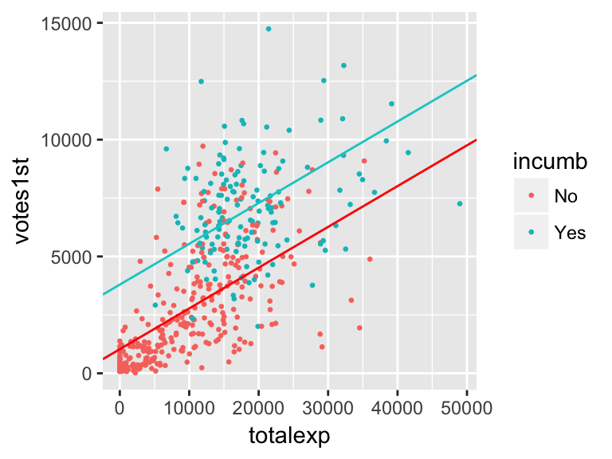
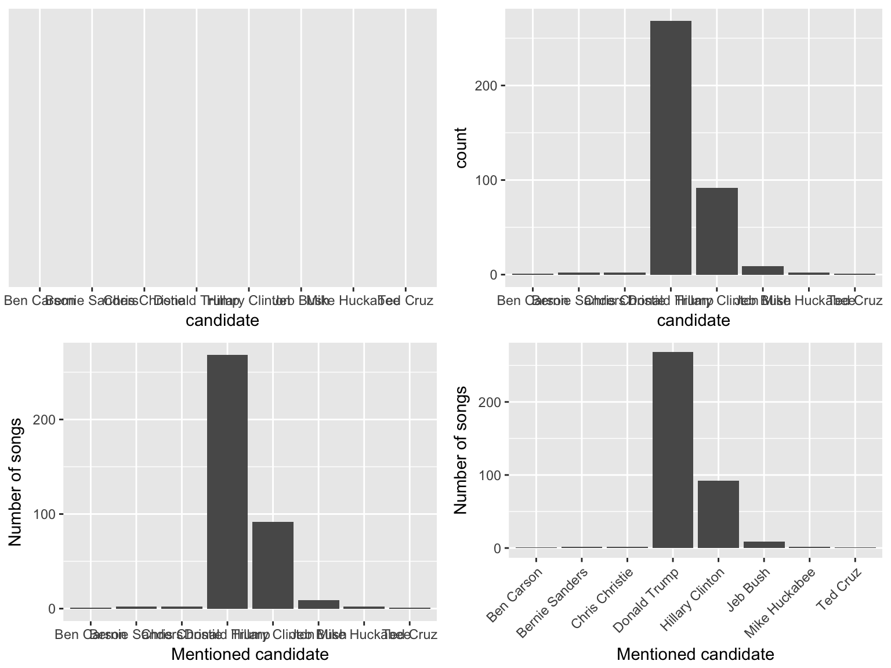
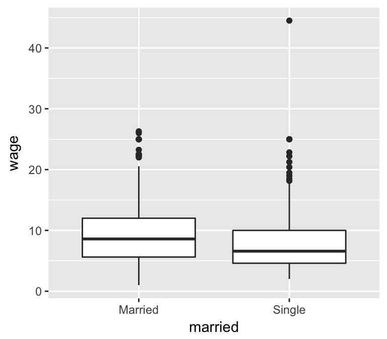
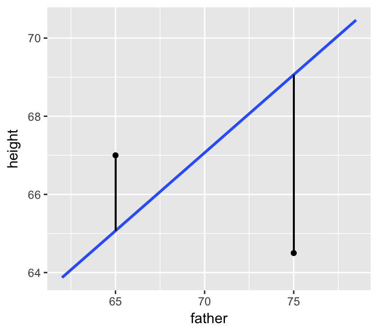

5.2 Homework 1: Visualizing & Modeling Variability
Directions:
There are two options to complete this homework:
Option A. Write your answers in a blank document:
- Start a new RMarkdown document
- Load the following packages at the top of your Rmd:
dplyr,ggplot2,fivethirtyeight,mosaic
- Type your answers for each exercise, with some sort of identifying header in between
Option B. Write your answers in between the questions:
- Download the Rmd file for this homework, which you can find on the course website
- Knit the document before writing any answers to make sure there are no compilation errors
- After each exercise that requires a response, enter your text and/or code chunks. It might be helpful to first include an empty code chunk with the word “solution” replacing the “r” just after the three tick marks, and then write your answer. An example is included in the Rmd file
Notes:
- When interpreting visualizations, models, etc, be sure to do so in a contextually meaningful way.
- This homework is a resource for you. Record all work that is useful for your current learning & future reference. Further, try your best, but don’t stay up all night trying to finish all of the exercises! We’ll discuss any questions / material you didn’t get to tomorrow.
Goals:
The goal of this homework is to get extra practice with visualizing relationships, constructing models, and interpreting models. You’ll also explore three new ideas:
interactions between predictors
controlling for covariates
residuals & least squares estimation
5.2.1 Interaction
In their research into the “campaign value of incumbency,” Benoit and Marsh (2008) collected data on the campaign spending of 464 candidates for the 2002 elections to the Irish Dail. The authors provide the following data set
campaigns <- read.csv("https://www.macalester.edu/~ajohns24/data/CampaignSpending.csv")which, for all 464 candidates, measures many variables including
| variable | meaning |
|---|---|
votes1st |
number of “1st preference” votes the candidate received |
incumb |
No if the candidate was a challenger, Yes if the candidate was an incumbent |
totalexp |
number of Euros spent by the candidate’s campaign |
The votes received varies by candidate. Our goal is to explain some of this variability:
ggplot(campaigns, aes(x = votes1st)) +
geom_histogram(color = "white")
- Warm-Up: Votes vs Incumbency
We might be able to explain some of the variability in votes received by a candidate’s incumbency status.Construct a visualization of the relationship between
votes1standincumb.Construct a model of
votes1stbyincumb, write out the model formula, & interpret all coefficients.From the model coefficients, compute the average votes received by incumbents and the average votes received by challengers. We’ll learn another method to do these computations tomorrow.
Warm-Up: Votes vs Incumbency Status & Campaign Spending
Let’s add campaign spending to our analysis.Construct 1 visualization of the relationship of
votes1stvsincumbandtotalexp.- Construct a model of
votes1stbyincumbandtotalexp. Store this asmodel2. Write out the following formulas:- the full model formula
- a simplified formula for challengers
- a simplified formula for incumbents
- the full model formula
Interpret all coefficients. Remember: your interpretation of the
incumbcoefficient here should be different than in the first model since the models contain different sets of predictors.- Use this model to predict the number of votes received by the following candidates. HINT: plug in the correct values in your model formula.
- Candidate 1: a challenger that spends 10,000 Euros
- Candidate 2: an incumbent that spends 10,000 Euros
- Candidate 1: a challenger that spends 10,000 Euros
You can check your predictions using the
predict()function:predict(model2, newdata = data.frame(incumb="No", totalexp = 10000)) predict(model2, newdata = data.frame(incumb="Yes", totalexp = 10000))
Check out a plot of
model2. (RStudio code is included FYI, but don’t worry about it for now!)ggplot(campaigns, aes(x = totalexp, y = votes1st, color = incumb)) + geom_point(size = 0.5) + geom_abline(intercept = 1031, slope = 0.1745, color = "red") + geom_abline(intercept = 3795, slope = 0.1745, color = "cyan3") Since the lines are parallel, this model assumes that incumbents and challengers enjoy the same return on campaign spending. However, notice from the plot that this may not be the best assumption. Rather, without the parallel model constraint, the trend looks more like this (you’ll make this plot later):
Since the lines are parallel, this model assumes that incumbents and challengers enjoy the same return on campaign spending. However, notice from the plot that this may not be the best assumption. Rather, without the parallel model constraint, the trend looks more like this (you’ll make this plot later):
 To allow our models for challengers and incumbents to have different intercepts and different slopes, we can typetotalexp * incumbinstead oftotalexp + incumbin thelmfunction:new_model <- lm(votes1st ~ totalexp * incumb, campaigns) summary(new_model)- The
totalexp:incumbYesterm that you see in the model summary is called an interaction term. Mathematically, it’s the product of these two variables,totalexp * incumbYes. With this in mind, write down the model formulas:- the full model formula (of the form
votes1st = a + b totalexp + c incumbYes + d totalexp * incumbYes) - a simplified formula for challengers (of the form
votes1st = a + b totalexp)
- a simplified formula for incumbents (of the form
votes1st = a + b totalexp)
- the full model formula (of the form
- Use this model to predict the number of votes received by the following candidates. Calculate these by hand & then check your work using
makeFun.- Candidate 1: a challenger that spends 10,000 Euros
- Candidate 2: an incumbent that spends 10,000 Euros
predict(new_model, newdata = data.frame(incumb="No", totalexp = 10000)) predict(new_model, newdata = data.frame(incumb="Yes", totalexp = 10000)) - Candidate 1: a challenger that spends 10,000 Euros
You can visualize this model by adding a
geom_smooth()to your scatterplot:ggplot(campaigns, aes(x = totalexp, y = votes1st, col = incumb)) + geom_point() + geom_smooth(method = "lm")You should notice the interaction between campaign spending & incumbency status, i.e. that the relationship between votes & spending differs for incumbents and challengers. With this in mind, comment on what the differing intercepts and differing slopes indicate about the relationship between the three variables of interest.
Putting this all together, interpret all four model coefficients from
new_model. Hint: As we have for models in the past, look back to the equations for the incumbent & challenger models.
- The
Interaction
In modeling \(y\), predictors \(x_1\) and \(x_2\) interact if the relationship between \(x_1\) and \(y\) differs for different values of \(x_2\).
5.2.2 Covariates
In examining multivariate models, we’ve seen that adding explanatory variables to the model helps to better explain variability in the response. For example, compare the plot on the left which ignores the grouping variable vs the plot on the right that includes it:

However, explaining variability isn’t the only reason to include multiple predictors in a model. When exploring the relationship between response \(y\) and predictor \(x_1\), there are typically covariates for which we want to control. For example, in comparing the effectiveness of 2 drug treatments, we might want to control for patients’ ages, health statuses, etc.
We’ll explore the concept of controlling for covariates using the CPS85 data in the mosaic package. These data, obtained through the Current Population Survey, contains labor force characteristics for a sample of workers in 1985. Though out of date, these data provide important illustrations of key modeling concepts:
data(CPS85)
head(CPS85, 3)
## wage educ race sex hispanic south married exper union age sector
## 1 9.0 10 W M NH NS Married 27 Not 43 const
## 2 5.5 12 W M NH NS Married 20 Not 38 sales
## 3 3.8 12 W F NH NS Single 4 Not 22 salesYou can access the “codebook” (description of the variables) by typing the following in your console:
?CPS85We’ll use these data to explore the pay gap between married and single workers, illustrated and modeled below:
ggplot(CPS85, aes(y=wage, x=married)) +
geom_boxplot()
cpsmod1 <- lm(wage ~ married, data = CPS85)
msummary(cpsmod1)
## Estimate Std. Error t value Pr(>|t|)
## (Intercept) 9.398 0.274 34.36 <2e-16 ***
## marriedSingle -1.087 0.466 -2.33 0.02 *
##
## Residual standard error: 5.12 on 532 degrees of freedom
## Multiple R-squared: 0.0101, Adjusted R-squared: 0.00826
## F-statistic: 5.44 on 1 and 532 DF, p-value: 0.0201From the model coefficients we see that: On average, married workers make $9.40 per hour and single workers make $1.09 less per hour than married workers.
- Correlation does not imply causation
If you’re single, this model probably didn’t inspire you to go out and find a spouse. Why? Just because there’s a relationship between wages and marital status doesn’t mean being single causes a person to earn less. List a few confounding variables that might explain this relationship between wages and marital status.
Including covariates / confounding variables
One variable that might explain the observed relationship between wages & marital status is years of experience - people with greater years of experience both tend to make more money and to be older & married. We can control for this covariate by including it in our model.Fill in the blanks to fit a model of
wagebymarriedandexperthat includes an interaction term.cpsmod2 <- lm(___, data = CPS85) summary(cpsmod2)Construct a visualization of this relationship that eliminates individual data points and focuses on the trend. Use this to explain what it means for
exper&marriedto interact.ggplot(CPS85, aes(y = wage, x = exper, color = married)) + geom_smooth(method = "lm")Compare two workers that both have 10 years of experience but one is married and the other is single. By how much do their predicted wages to differ? Use the model formula to calculate this difference and the plot to provide intuition.
Compare two workers that both have 20 years of experience but one is married and the other is single. By how much do their predicted wages to differ?
If you’d like extra practice, interpret every coefficient in this model.
Controlling for more covariates
Taking experience level into account added some insight into the discrepancy between single and married workers’ wages. Let’s see what happens when we control for even more variables. To this end, model wages (wage) by marital status (married) while controlling for experience (exper), years of education (educ), and the job sector (sector) in which one works. For simplicity, we’ll eliminate all interaction terms:cpsmod3 <- lm(wage ~ exper + educ + sector + married, data = CPS85) summary(cpsmod3)Note: This is difficult model to visualize since there are 2 quantitative variables and 2 categorical variables with a possible 16 category combinations (2 marital statuses * 8 sectors). If you had to draw it, it would look like 16 parallel planes.
Compare two workers that both have 10 years of experience, 16 years of education, and work in the
serviceindustry. If one is married and the other is single, by how much do their predicted wages to differ?Compare two workers that both have 20 years of experience, 12 years of education, and work in the
manuf(manufacturing) industry. If one is married and the other is single, by how much do their predicted wages to differ?In light of a & b, interpret the
marriedSinglecoefficient.In conclusion, we saw a
marriedSinglecoefficient of-1.09incpsmod1and amarriedSinglecoefficient of-0.40incpsmod3. Explain the significance of the difference between these two measurements - what insight does it provide?
- Extra interpretation practice
If you’d like extra practice, answer the following questions related to the coefficients incpsmod3.What is the reference level of the
sectorvariable? HINT: You need to know what the levels of this variable are.For fixed
educ,marriedstatus, andexper, in what sector do workers make the most money? The least?Interpret the
educcoefficient.Interpret the
managcoefficient.
5.2.3 Least Squares Estimation
Thus far you’ve been using RStudio to construct models and have focused on interpreting the output. Now let’s discuss how this first step happens, ie. how sample data are used to estimate population models. Due to their simplicity and the fact that these data helped inspire Francis Galton’s development of regression methodology in the 1880’s, we’ll use the data Galton collected on the heights of a person and their parents. From the mosaic package:
data(Galton)
?GaltonLet response variable \(y\) be a person’s height and \(x_1\) be the height of their father. Then the (population) linear regression model of \(y\) vs the \(x_1\) is
\[y = \beta_0 + \beta_1 x_1\]
Note that the \(\beta_i\) represent the population coefficients. Galton didn’t have data for the entire population of interest thus didn’t know the “true” values of the \(\beta_i\). Rather, he used sample data to estimate the \(\beta_i\) by \(\hat{\beta}_i\). That is, the sample estimate of the population model is
\[y = \hat{\beta}_0 + \hat{\beta}_1 x_1\]
In choosing the “best” estimates \(\hat{\beta}_i\), he was looking for the coefficients that best described the relationship among the sample subjects. In the visual below, we can see that the red line does a better job at capturing this relationship than the blue line does:
Mainly, on average, the individual points fall closer to the red line than the blue line. The distance between an individual observation and its model value (prediction) is called a residual.
Residuals
Let case \(i\) have observed response \(y_i\) and predictor \(x_i\). Then the model / predicted value for this case is \[\hat{y}_i = \hat{\beta}_0 + \hat{\beta}_1 x_i\] The difference between the observed and predicted value is the residual \(r_i\): \[r_i = y_i - \hat{y}_i\]
We can use Galton’s data to estimate the population model: \[y = \hat{\beta}_0 + \hat{\beta}_1 x = 39.11039 + 0.39938 x\]
htmodel <- lm(height ~ father, data = Galton) summary(htmodel) ## ## Call: ## lm(formula = height ~ father, data = Galton) ## ## Residuals: ## Min 1Q Median 3Q Max ## -10.268 -2.669 -0.209 2.634 11.933 ## ## Coefficients: ## Estimate Std. Error t value Pr(>|t|) ## (Intercept) 39.1104 3.2271 12.12 <2e-16 *** ## father 0.3994 0.0466 8.57 <2e-16 *** ## --- ## Signif. codes: 0 '***' 0.001 '**' 0.01 '*' 0.05 '.' 0.1 ' ' 1 ## ## Residual standard error: 3.45 on 896 degrees of freedom ## Multiple R-squared: 0.0758, Adjusted R-squared: 0.0748 ## F-statistic: 73.5 on 1 and 896 DF, p-value: <2e-16Consider the following 2 sample subjects with the following measurements and plotted below:
## family father mother sex height nkids ## 14 4 75 64 F 64.5 5 ## 849 193 65 64 M 67.0 6
Calculate the residuals (the length of the vertical lines) for both of these subjects.
htmodelis anlm“object”. Not only does it contain info about the model coefficients, it contains the numerical values of the residuals (residuals) and model predictions (fitted.values) for each case in the data set.Create a data frame
htmodel_resultsthat stores the observed height, model predicted height, and residual for each case inGalton:htmodel_results <- data.frame(observed = Galton$height, predicted = htmodel$fitted.values, residual = htmodel$residuals) head(htmodel_results) ## observed predicted residual ## 1 73.2 70.46 2.738 ## 2 69.2 70.46 -1.262 ## 3 69.0 70.46 -1.462 ## 4 69.0 70.46 -1.462 ## 5 73.5 69.26 4.236 ## 6 72.5 69.26 3.236What is the relationship between the
observed,predicted, andresidualvariables inhtmodel_results? (This shouldn’t be a surprise - it’s just a confirmation of the definition of a residual.)Confirm that, within rounding error, the mean residual equals 0. This property always holds for regression models!
Obtain summary statistics of the residuals. Where does this information appear in
summary(htmodel)?
EXTRA: A COMMENT ON THEORY
I hope you learned about linear regression in linear algebra! Suppose we have a sample of \(n\) subjects. For subject \(i \in \{1,...,n\}\) let \(y_i\) denote the observed response value and \((x_{i1}, x_{i2},...,x_{ik})\) denote the observed values of the \(k\) predictors. Then we can collect our response values into a vector \(y\), our predictor values into a matrix \(X\), and our regression coefficients into a vector \(\beta\). Note that a column of 1s is included for an intercept term in \(X\):
\[ y = \left(\begin{array}{c} y_1 \\ y_2 \\ \vdots \\ y_n \end{array} \right) \;\;\;\; \text{ and } \;\;\;\; X = \left(\begin{array}{ccccc} 1 & x_{11} & x_{12} & \cdots & x_{1k} \\ 1 & x_{21} & x_{22} & \cdots & x_{2k} \\ \vdots & \vdots & \vdots & \cdots & \vdots \\ 1 & x_{n1} & x_{n2} & \cdots & x_{nk} \\ \end{array} \right) \;\;\;\; \text{ and } \;\;\;\; \beta = \left(\begin{array}{c} \beta_1 \\ \beta_2 \\ \vdots \\ \beta_k \end{array} \right)\]
Then we can express the model \(y_i = \beta_0 + \beta_1 x_{i1} + \cdots + \beta_k x_{ik}\) for \(i \in \{1,...,n\}\) using linear algebra:
\[y = X\beta\] Further, let \(\hat{\beta}\) denote the vector of sample estimated \(\beta\) and \(\hat{y}\) denote the vector of predictions / model values:
\[\hat{y} = X \hat{\beta}\]
Thus the residual vector is
\[y - \hat{y} = X\beta - X\hat{\beta}\] and the sum of squared residuals is
\[(y - \hat{y})^T(y - \hat{y})\]
Challenge: Prove that the following formula for sample coefficients \(\hat{\beta}\) are the least squares estimates of \(\beta\), ie. they minimize the sum of squared residuals:
\[\hat{\beta} = (X^TX)^{-1}X^Ty\]